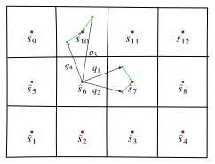

5 State abstraction
5.1 Motivation
In the previous lecture, we showed how to obtain model approximation bounds when the true model and the approximate model have the same state space. In this lecture, we consider the setting where the state spaces are not equal.
In particular, consider a model \(\ALPHABET M = \langle \ALPHABET S, \ALPHABET A, P, c, T \rangle\) and an approximate model \(\widehat {\ALPHABET M} = \langle \hat {\ALPHABET S}, \ALPHABET A, \hat P, \hat c, T \rangle\). We assume that we are given a surjective state abstraction function \(φ \colon \ALPHABET S \to \hat {\ALPHABET S}\).
We can use \(φ\) to lift1 any function \(\hat f\) defined on \(\hat {\ALPHABET S}\) to a function defined on \(\ALPHABET S\) given by \(f = \hat f \circ φ\), i.e., \[f(s) = \hat f(φ(s)), \quad \forall s \in \ALPHABET S.\] An immediate consequence of the definition of the sup-norm is that the lifting operation is non-expansive.
Lemma 5.1 For any functions \(\hat f_1, \hat f_2 \colon \hat {\ALPHABET S} \to \reals\), \[ \NORM{ \hat f_1 \circ φ - \hat f_2 \circ φ }_{∞} \le \NORM{ \hat f_1 - \hat f_2 }_{∞}. \]
As before, let \(\{V^\star_t\}_{t=1}^T\) and \(\{\hat V^\star_t\}_{t =1}^T\) denote the optimal value functions of the true model \(\ALPHABET M\) and the approximate model \(\widehat {\ALPHABET M}\), respectively. Moreover, let \(π^\star = (π^\star_1, \dots, π^\star_T)\) and \(\hat π^\star = (\hat π^\star_1, \dots, \hat π^\star_T)\) be optimal policies for the true model \(\ALPHABET M\) and the approximate model \(\widehat {\ALPHABET M}\), respectively.
Any policy \(\hat π = (\hat π_1, \dots, \hat π_T)\) on \(\widehat {\ALPHABET M}\) can be lifted to a policy on \(\ALPHABET M\) by setting \(π_t = \hat π_t \circ φ\) for all \(t\). We write this lifted policy as \(\hat π \circ φ\).
We are interested in the following questions:
Policy error bounds: Given a policy \(\hat π = (\hat π_1, \dots, \hat π_T)\) for \(\widehat {\ALPHABET M}\), what is the error if \(\hat V^{\hat π}_t \circ φ\) is used as an approximation for \(V^{\hat π \circ φ}_t\) (or equivalently, if \(\hat Q^{\hat π}_t \circ φ\) is used as an approximation for \(Q^{\hat π \circ φ}_t\))?
Value error bounds: What is the error if \(\hat V^\star_t \circ φ\) is used as an approximation for \(V^\star_t\) (or equivalently, if \(\hat Q^\star_t \circ φ\) is used as an approximation for \(Q^\star_t\))?
Model approximation error: What is the error if the policy \(\hat π^\star \circ φ\) is used instead of the optimal policy \(π^\star\)? Equivalently, how large is the gap between \((V^\star_t, Q^\star_t)\) and \((V^{\hat π^\star \circ φ}_t, Q^{\hat π^\star \circ φ}_t)\)?
5.2 Model approximation (Take 2)
Let \(\ALPHABET V\) and \(\ALPHABET Q\) denote the space of value and action-value functions in model \(\ALPHABET M\), respectively. Similarly, let \(\hat {\ALPHABET V}\) and \(\hat {\ALPHABET Q}\) denote the space of value and action-value functions in model \(\widehat {\ALPHABET M}\). We will use \(\ENV_t \colon \ALPHABET V \to \ALPHABET Q\) and \(\hat \ENV_t \colon \hat {\ALPHABET V} \to \hat {\ALPHABET Q}\) to denote the environment operators in model \(\ALPHABET M\) and \(\widehat {\ALPHABET M}\).
5.2.1 Mismatch operator
Since \(\ALPHABET M\) and \(\widehat {\ALPHABET M}\) are defined on different state spaces, we need to modify the definition of the mismatch operator. Define the mismatch operator \(\hat \MISMATCH_t \colon \hat {\ALPHABET V} \to \ALPHABET Q\) as follows: for any \(\hat v \in \hat {\ALPHABET V}\), \[ \hat \MISMATCH_t \hat v = \ENV_t (\hat v \circ φ) - (\hat \ENV_t \hat v) \circ φ, \] where \((\hat q \circ φ)(s,a) \coloneqq \hat q(φ(s),a)\) for any \(\hat q \in \hat {\ALPHABET Q}\).
Then, we have the following one-step estimate.
Lemma 5.2 (One step error propagation) Given \(v_{t+1} \in \ALPHABET V\) and \(\hat v_{t+1} \in \hat {\ALPHABET V}\), define \(q_t = \ENV_t v_{t+1}\) and \(\hat q_t = \hat \ENV_t \hat v_{t+1}\). Then, \[ \NORM{q_{t} - \hat q_t \circ φ} \le \NORM{\hat \MISMATCH_t \hat v_{t+1}} + \NORM{v_{t+1} - \hat v_{t+1} \circ φ} \] where \((\hat q_t \circ φ)(s,a) \coloneqq \hat q_t(φ(s),a)\).
Consider \[\begin{align*} \NORM{q_{t} - \hat q_t \circ φ} &= \NORM{\ENV_t v_{t+1} - (\hat \ENV_t \hat v_{t+1}) \circ φ } \\ &\stackrel{(a)}\le \NORM{\ENV_t (\hat v_{t+1} \circ φ) - (\hat \ENV_t \hat v_{t+1}) \circ φ} + \NORM{\ENV_t v_{t+1} - \ENV_t (\hat v_{t+1} \circ φ) } \\ &\stackrel{(b)}\le \NORM{\hat \MISMATCH_t \hat v_{t+1}} + \NORM{v_{t+1} - \hat v_{t+1} \circ φ}, \end{align*}\] where \((a)\) follows from the triangle inequality and \((b)\) uses the definition of \(\hat \MISMATCH_t\) and the non-expansion of \(\ENV_t\) from Lemma 4.1.
The mismatch operator can be used to bound the difference between evaluating a lifted policy in the true model and evaluating the corresponding policy in the approximate model.
5.2.2 Policy error
Proposition 5.1 (Policy error) For any policy \(\hat π = (\hat π_1, \dots, \hat π_T)\) on \(\widehat {\ALPHABET M}\), define the policy errors \[ α^{\hat π}_t \coloneqq \NORM{V^{\hat π \circ φ}_t - \hat V^{\hat π}_t \circ φ}, \qquad β^{\hat π}_t \coloneqq \NORM{Q^{\hat π \circ φ}_t - \hat Q^{\hat π}_t \circ φ}. \] Then, for any \(t \in \{1,\dots,T\}\), \[ α^{\hat π}_t \le β^{\hat π}_t \le \sum_{\tau=t}^T Δ^{\hat π}_\tau, \] where \[ Δ^{\hat π}_t = \NORM{\hat \MISMATCH_t \hat V^{\hat π}_{t+1}}. \]
We prove the claim by backward induction on \(t\).
Base case (\(t = T+1\)). The result holds trivially as \(V^{\hat π \circ φ}_{T+1} = \hat V^{\hat π}_{T+1} = 0\), so \(α^{\hat π}_{T+1} = 0\).
Induction step. Fix \(t \in \{1,\dots,T\}\) and assume the claim holds at time \(t+1\), i.e. \[ α^{\hat π}_{t+1} \le \sum_{\tau=t+1}^{T} Δ^{\hat π}_\tau. \] Recall that \[ Q^{\hat π \circ φ}_t = \ENV_t V^{\hat π \circ φ}_{t+1}, \quad \hat Q^{\hat π}_t = \hat \ENV_t \hat V^{\hat π}_{t+1}, \] and \[ V^{\hat π \circ φ}_t = \ALPHABET T^{\hat π_t \circ φ} Q^{\hat π \circ φ}_t, \quad \hat V^{\hat π}_t = \ALPHABET T^{\hat π_t} \hat Q^{\hat π}_t. \] Observe that \[ (\hat V^{\hat π}_t \circ φ) = \bigl(\ALPHABET T^{\hat π_t} \hat Q^{\hat π}_t\bigr) \circ φ = \ALPHABET T^{\hat π_t \circ φ} (\hat Q^{\hat π}_t \circ φ). \] From the one-step lemma we get: \[ β^{\hat π}_t = \NORM{Q^{\hat π \circ φ}_t - \hat Q^{\hat π}_t \circ φ} \le Δ^{\hat π}_t + α^{\hat π}_{t+1} \le \sum_{\tau=t}^{T} Δ^{\hat π}_\tau. \] Now, using the non-expansion of \(\ALPHABET T^{\hat π_t \circ φ}\) we get: \[ α^{\hat π}_t = \NORM{V^{\hat π \circ φ}_t - \hat V^{\hat π}_t \circ φ} \le β^{\hat π}_t \le \sum_{\tau=t}^{T} Δ^{\hat π}_\tau, \] where the last step uses the induction hypothesis. This establishes the claim at time \(t\).
By backward induction, the bound holds for all \(t \in \{1,\dots,T\}\).
5.2.3 Value error
Similar to the above, we can also bound the difference between the optimal value function of the true model and the lift of the optimal value function of the approximate model.
Proposition 5.2 (Value error) Define the value errors \[ α^\star_t \coloneqq \NORM{V^\star_t - \hat V^\star_t \circ φ}, \qquad β^\star_t \coloneqq \NORM{Q^\star_t - \hat Q^\star_t \circ φ}. \] Then, for any \(t \in \{1,\dots,T\}\), \[ α^\star_t \le β^\star_t \le \sum_{\tau=t}^T Δ^\star_\tau, \] where \[ Δ^\star_t = \NORM{\hat \MISMATCH_t \hat V^\star_{t+1}}. \]
The proof is similar to the proof of Proposition 5.1.
We prove the claim by backward induction on \(t\).
Base case (\(t = T+1\)). The result holds trivially as \(V^\star_{T+1} = \hat V^\star_{T+1} = 0\), so \(α^\star_{T+1} = 0\).
Induction step. Fix \(t \in \{1,\dots,T\}\) and assume the claim holds at time \(t+1\), i.e. \[ α^\star_{t+1} \le \sum_{\tau=t+1}^{T} Δ^\star_\tau. \] Recall that \[ Q^\star_t = \ENV_t V^\star_{t+1}, \quad \hat Q^\star_t = \hat \ENV_t \hat V^\star_{t+1}, \] and \[ V^\star_t = \ALPHABET T^\star Q^\star_t, \quad \hat V^\star_t = \ALPHABET T^\star \hat Q^\star_t. \] Observe that \[ (\hat V^\star_t \circ φ) = \bigl(\ALPHABET T^\star \hat Q^\star_t\bigr) \circ φ = \ALPHABET T^\star (\hat Q^\star_t \circ φ). \] From the one-step lemma we get: \[ β^\star_t = \NORM{Q^\star_t - \hat Q^\star_t \circ φ} \le Δ^\star_t + α^\star_{t+1} \le \sum_{\tau=t}^{T} Δ^\star_\tau. \] Now, using the non-expansion of \(\ALPHABET T^\star\) we get: \[ α^\star_t = \NORM{V^\star_t - \hat V^\star_t \circ φ} \le β^\star_t \le \sum_{\tau=t}^{T} Δ^\star_\tau, \] where the last step uses the induction hypothesis. This establishes the claim at time \(t\).
By backward induction, the bound holds for all \(t \in \{1,\dots,T\}\).
5.2.4 Model approximation error
To bound the model approximation error, observe that \[\begin{align} \label{eq:triangle-model-error-abstract} α_t &\coloneqq \NORM{V^\star_t - V^{\hat π^\star \circ φ}_t} \le \NORM{V^\star_t - \hat V^{\hat π^\star}_t \circ φ} + \NORM{V^{\hat π^\star \circ φ}_t - \hat V^{\hat π^\star}_t \circ φ} \\ &\stackrel{(a)}= α^\star_t + α^{\hat π^\star}_t, \end{align}\] where \((a)\) uses that \(\hat π^\star\) is optimal for the approximate model, so \(\hat V^{\hat π^\star} = \hat V^\star\), and \(α^\star_t\), \(α^{\hat π^\star}_t\) are as in Proposition 5.2 and Proposition 5.1. The same triangle holds for the action-value gaps \(β_t\), \(β^\star_t\), and \(β^{\hat π^\star}_t\). The key point is that because \(\hat V^{\hat π^\star} = \hat V^\star\), the one-step model errors that appear in those bounds are the same.
Theorem 5.1 (Model approximation error) Define the model approximation errors \[ α_t \coloneqq \NORM{V^\star_t - V^{\hat π^\star \circ φ}_t}, \qquad β_t \coloneqq \NORM{Q^\star_t - Q^{\hat π^\star \circ φ}_t}. \] Then, for any \(t \in \{1,\dots,T\}\), \[ α_t \le β_t \le β^\star_t + β^{\hat π^\star}_t \le \sum_{\tau=t}^{T} \bigl( Δ^\star_\tau + Δ^{\hat π^\star}_\tau \bigr) = 2 \sum_{\tau=t}^{T} \NORM{\hat \MISMATCH_\tau \hat V^\star_{\tau+1}}, \] where \(β^\star_t\), \(β^{\hat π^\star}_t\), \(Δ^\star_t\), and \(Δ^{\hat π^\star}_t\) are as in Proposition 5.2 and Proposition 5.1. In particular, \(\hat π^\star \circ φ\) is \(α_t\)-optimal for \(\ALPHABET M\) at time \(t\).
The inequality \(α_t \le β_t\) follows as in Theorem 4.1. Using \(\hat Q^{\hat π^\star}_t = \hat Q^\star_t\), \[ β_t = \NORM{Q^\star_t - Q^{\hat π^\star \circ φ}_t} \le \NORM{Q^\star_t - \hat Q^\star_t \circ φ} + \NORM{Q^{\hat π^\star \circ φ}_t - \hat Q^{\hat π^\star}_t \circ φ} = β^\star_t + β^{\hat π^\star}_t. \] Proposition 5.2 and Proposition 5.1 then give \[ β^\star_t + β^{\hat π^\star}_t \le \sum_{\tau=t}^{T} Δ^\star_\tau + \sum_{\tau=t}^{T} Δ^{\hat π^\star}_\tau. \] Since \(\hat V^{\hat π^\star}_{\tau+1} = \hat V^\star_{\tau+1}\), we have \(Δ^\star_\tau = Δ^{\hat π^\star}_\tau = \NORM{\hat \MISMATCH_\tau \hat V^\star_{\tau+1}}\), and the claimed bound follows.
5.3 IPM-based bounds on model approximation error
The above bounds require computing \(\hat V^\star_t\) and being able to evaluate \(\hat \MISMATCH_t \hat V^\star_{t+1}\). As in the previous lecture, it is often more convenient to express the guarantees in terms of an explicit distance between the models \((P,c)\) and \((\hat P,\hat c)\).
We use the same IPM setup as before. Let \(\def\F{\mathfrak{F}}\F\) be a convex and balanced set of functions, and write \(d_{\F}\) for the corresponding IPM and \(ρ_{\F}\) for its Minkowski functional. In particular, for any function \(f\), \[\begin{equation}\label{eq:IPM-ineq-abstract} \left| \int f dν_1 - \int f dν_2 \right| \le ρ_{\F}(f) d_{\F}(ν_1, ν_2). \end{equation}\]
Because the models live on different state spaces, the natural one-step comparison is between a transition on \(\ALPHABET S\) pushed forward through \(φ\) and a transition on \(\hat {\ALPHABET S}\). Define the pushed-forward kernel \[ P_{φ,t}(\hat s' \mid s,a) \coloneqq P_t\bigl(φ^{-1}(\hat s') \mid s,a\bigr). \]
Definition 5.1 (Model distance under state abstraction) Given a function class \(\F\), we say that \(\widehat{\ALPHABET M}\) is an \((ε_φ,\hat δ_φ)\)-approximation of \(\ALPHABET M\) with respect to \(φ\), where \(ε_φ = (ε_{φ,1},\dots,ε_{φ,T})\) and \(\hat δ_φ = (\hat δ_{φ,1},\dots,\hat δ_{φ,T})\), if for every time \(t\) and all \((s,a) \in \ALPHABET S \times \ALPHABET A\),
- \(\ABS{c_t(s,a) - \hat c_t(φ(s),a)} \le ε_{φ,t}\);
- \(d_{\F}\bigl(P_{φ,t}(\cdot \mid s,a), \hat P_t(\cdot \mid φ(s),a)\bigr) \le \hat δ_{φ,t}\).
Equivalently, for any two models we may take \[ ε_{φ,t} = \sup_{(s,a) \in \ALPHABET S \times \ALPHABET A} \ABS{c_t(s,a) - \hat c_t(φ(s),a)} \] and \[ \hat δ_{φ,t} = \sup_{(s,a) \in \ALPHABET S \times \ALPHABET A} d_{\F}\bigl(P_{φ,t}(\cdot \mid s,a), \hat P_t(\cdot \mid φ(s),a)\bigr). \]
An immediate implication is a one-step bound on the mismatch operator.
Lemma 5.3 (IPM bound on mismatch) If \(\widehat{\ALPHABET M}\) is an \((ε_φ,\hat δ_φ)\)-approximation of \(\ALPHABET M\) with respect to \(φ\) and \(\F\), then for any time \(t\) and any \(\hat v \colon \hat {\ALPHABET S} \to \reals\), \[ \NORM{\hat \MISMATCH_t \hat v} \le ε_{φ,t} + \hat δ_{φ,t} ρ_{\F}(\hat v). \]
From the definition of the mismatch operator, \[\begin{align*} \NORM{\hat \MISMATCH_t \hat v} &= \max_{(s,a) \in \ALPHABET S \times \ALPHABET A} \biggl\lvert c_t(s,a) + \sum_{s' \in \ALPHABET S} P_t(s' \mid s,a)\hat v(φ(s')) \\ &\hskip 4em - \hat c_t(φ(s),a) - \sum_{\hat s' \in \hat {\ALPHABET S}} \hat P_t(\hat s' \mid φ(s),a)\hat v(\hat s') \biggr\rvert \\ &\le \max_{(s,a) \in \ALPHABET S \times \ALPHABET A} \biggl\{ \ABS{c_t(s,a) - \hat c_t(φ(s),a)} \\ &\hskip 4em + \biggl\lvert \sum_{\hat s' \in \hat {\ALPHABET S}} P_{φ,t}(\hat s' \mid s,a)\hat v(\hat s') - \sum_{\hat s' \in \hat {\ALPHABET S}} \hat P_t(\hat s' \mid φ(s),a)\hat v(\hat s') \biggr\rvert \biggr\} \\ &\le \max_{(s,a) \in \ALPHABET S \times \ALPHABET A} \Bigl\{ \ABS{c_t(s,a) - \hat c_t(φ(s),a)} + ρ_{\F}(\hat v) d_{\F}\bigl(P_{φ,t}(\cdot \mid s,a), \hat P_t(\cdot \mid φ(s),a)\bigr) \Bigr\} \\ &\le ε_{φ,t} + \hat δ_{φ,t} ρ_{\F}(\hat v). \end{align*}\] The second inequality uses \(\eqref{eq:IPM-ineq-abstract}\); the last inequality uses the \(t\)-th component of the \((ε_φ,\hat δ_φ)\)-approximation.
Combining Lemma 5.3 with Theorem 5.1 gives an explicit model approximation bound in terms of the cost and transition errors.
Theorem 5.2 (Model approximation error via IPMs) Suppose that \(\widehat{\ALPHABET M}\) is an \((ε_φ,\hat δ_φ)\)-approximation of \(\ALPHABET M\) with respect to \(φ\). Let \(α_t\) and \(β_t\) be as in Theorem 5.1. Then, for any \(t \in \{1,\dots,T\}\), \[ β_t \le 2 \sum_{\tau=t}^{T} \bigl[ ε_{φ,\tau} + \hat δ_{φ,\tau} ρ_{\F}(\hat V^\star_{\tau+1}) \bigr], \] and \(α_t \le β_t\). In particular, \(\hat π^\star \circ φ\) is \(α_t\)-optimal for \(\ALPHABET M\) at time \(t\).
Note that the above bound requires knowledge of \(\hat V^\star_t\). For specific choices of IPM, it is possible to obtain instance-independent upper bounds that do not require explicit knowledge of \(\hat V^\star_t\).
Corollary 5.1 (Instance-independent model approximation bounds)
Suppose the approximation is with respect to total variation. Then \[ α_t \le 2 \sum_{\tau=t}^{T} ε_{φ,\tau} + \sum_{\tau=t}^{T} \hat δ_{φ,\tau} \sum_{k=\tau+1}^{T} \SPAN(\hat c_k). \]
Suppose the approximation is with respect to Wasserstein distance. If the approximate model has Lipschitz constants \((\hat L^c_t, \hat L^P_t)\), define \(\hat L^V_{T+1}=0\) and \[ \hat L^V_t = \hat L^c_t + \hat L^P_t \hat L^V_{t+1}. \] Then \[ α_t \le 2 \sum_{\tau=t}^{T} \bigl[ ε_{φ,\tau} + \hat δ_{φ,\tau} \hat L^V_{\tau+1} \bigr]. \]
5.4 Example: State quantization
Consider a finite-horizon MDP \(\ALPHABET M = \langle \ALPHABET S, \ALPHABET A, P, c, T \rangle\) whose state space \(\ALPHABET S\) is a compact metric space (for example, a compact subset of a Euclidean space). If \(\ALPHABET S\) is continuous, the dynamic programming recursion cannot be implemented exactly. The simplest approximation is to quantize the state space.
Let \(\{\ALPHABET S_1,\dots,\ALPHABET S_n\}\) be a partition of \(\ALPHABET S\), and for each cell pick a representative \(\hat s_i \in \ALPHABET S_i\). Write \(\hat {\ALPHABET S} = \{\hat s_1,\dots,\hat s_n\}\) and define the quantization map \(φ \colon \ALPHABET S \to \hat {\ALPHABET S}\) by sending every point of \(\ALPHABET S_i\) to \(\hat s_i\). The associated quantization radius is \[ r \coloneqq \sup_{s \in \ALPHABET S} d_{\ALPHABET S}\bigl(s, φ(s)\bigr). \]
Define a finite-state approximate model \(\widehat{\ALPHABET M} = \langle \hat {\ALPHABET S}, \ALPHABET A, \hat P, \hat c, T \rangle\) by restricting the cost to the grid and by lumping transitions into cells: for every \(\hat s_i,\hat s_j \in \hat {\ALPHABET S}\) and \(a \in \ALPHABET A\), \[ \hat c_t(\hat s_i,a) = c_t(\hat s_i,a), \quad \hat P_t(\hat s_j \mid \hat s_i,a) = P_t(\ALPHABET S_j \mid \hat s_i,a). \]

This is exactly the state-abstraction setup of the present lecture: the approximate model lives on \(\hat {\ALPHABET S}\), and policies / value functions on \(\widehat{\ALPHABET M}\) are lifted to \(\ALPHABET M\) by composition with \(φ\). In particular, the policy of interest is \(\hat π^\star \circ φ\).
5.4.1 Cost and dynamics errors
Assume that the true model is Lipschitz: there are constants \((L^c_t, L^P_t)\) such that for all \(s,\tilde s \in \ALPHABET S\) and \(a \in \ALPHABET A\), \[ \ABS{c_t(s,a)-c_t(\tilde s,a)} \le L^c_t d_{\ALPHABET S}(s,\tilde s) \] and \[ W_1\bigl(P_t(\cdot \mid s,a), P_t(\cdot \mid \tilde s,a)\bigr) \le L^P_t d_{\ALPHABET S}(s,\tilde s). \] We metrize the grid \(\hat {\ALPHABET S}\) with the same metric \(d_{\ALPHABET S}\). Recall that the pushed-forward kernel is \(P_{φ,t}(\hat s_j \mid s,a) = P_t(\ALPHABET S_j \mid s,a)\), and by construction \(\hat P_t(\cdot \mid φ(s),a) = P_{φ,t}(\cdot \mid φ(s),a)\). Thus \[ \hat δ_{φ,t} = \sup_{(s,a) \in \ALPHABET S \times \ALPHABET A} W_1\bigl( P_{φ,t}(\cdot \mid s,a),\, P_{φ,t}(\cdot \mid φ(s),a) \bigr). \]
Lemma 5.4 (Cost and dynamics errors under quantization) For every \(t\), \[ ε_{φ,t} \le L^c_t r \quad\text{and}\quad \hat δ_{φ,t} \le (L^P_t + 2)\, r. \]
For the cost, for every \((s,a)\), \[ \ABS{c_t(s,a)-\hat c_t(φ(s),a)} = \ABS{c_t(s,a)-c_t(φ(s),a)} \le L^c_t d_{\ALPHABET S}\bigl(s, φ(s)\bigr) \le L^c_t r. \]
For the dynamics, fix \((s,a)\) and write \(μ = P_t(\cdot \mid s,a)\) and \(ν = P_t(\cdot \mid φ(s),a)\). Then \(P_{φ,t}(\cdot \mid s,a) = φ_\# μ\) and \(P_{φ,t}(\cdot \mid φ(s),a) = φ_\# ν\). For any coupling \((X,Y)\) of \((μ,ν)\), \[\begin{align*} \EXP\bigl[ d_{\ALPHABET S}\bigl(φ(X),φ(Y)\bigr) \bigr] &\le \EXP\bigl[ d_{\ALPHABET S}\bigl(φ(X),X\bigr) + d_{\ALPHABET S}(X,Y) + d_{\ALPHABET S}\bigl(Y,φ(Y)\bigr) \bigr] \\ &\le \EXP\bigl[ d_{\ALPHABET S}(X,Y) \bigr] + 2r. \end{align*}\] Taking the optimal coupling yields \[ W_1(φ_\# μ, φ_\# ν) \le W_1(μ,ν) + 2r \le (L^P_t + 2)\, r. \] Taking the supremum over \((s,a)\) completes the proof.
5.4.2 Approximation bound
Combining Lemma 5.4 with the Wasserstein case of Corollary 5.1, the lifted quantized policy \(\hat π^\star \circ φ\) is \(α_t\)-optimal for \(\ALPHABET M\) with \[ α_t \le 2 \sum_{\tau=t}^{T} \bigl[ ε_{φ,\tau} + \hat δ_{φ,\tau} \hat L^V_{\tau+1} \bigr] \le 2r \sum_{\tau=t}^{T} \bigl[ L^c_\tau + (L^P_\tau + 2)\hat L^V_{\tau+1} \bigr], \] where \(\hat L^V_t\) are Lipschitz constants for \(\hat V^\star_t\) on \((\hat {\ALPHABET S}, d_{\ALPHABET S})\).
It remains only to control \(\hat L^V_t\). On the grid, the restricted cost is \(L^c_t\)-Lipschitz. For the transitions, the same coupling argument gives, for any \(\hat s,\hat s' \in \hat {\ALPHABET S}\), \[ W_1\bigl(\hat P_t(\cdot \mid \hat s,a), \hat P_t(\cdot \mid \hat s',a)\bigr) \le L^P_t d_{\ALPHABET S}(\hat s,\hat s') + 2r. \] Thus, if neighboring representatives are separated by at least \(d_{\min}\), a sufficient choice is \[ \hat L^c_t = L^c_t, \quad \hat L^P_t = L^P_t + \frac{2r}{d_{\min}}, \] and Theorem 3.3 gives \(\hat L^V_{T+1}=0\) with \[ \hat L^V_t = \hat L^c_t + \hat L^P_t \hat L^V_{t+1}. \] In the common case of a uniform grid with \(d_{\min} \asymp r\), the correction \(2r/d_{\min}\) is \(\mathcal{O}(1)\), and the whole bound remains \(\mathcal{O}(r)\).
References
There is an analogous operation of projecting any function on \(\ALPHABET S\) to a function of \(\hat {\ALPHABET S}\), but we won’t discuss that line of approximation here.↩︎